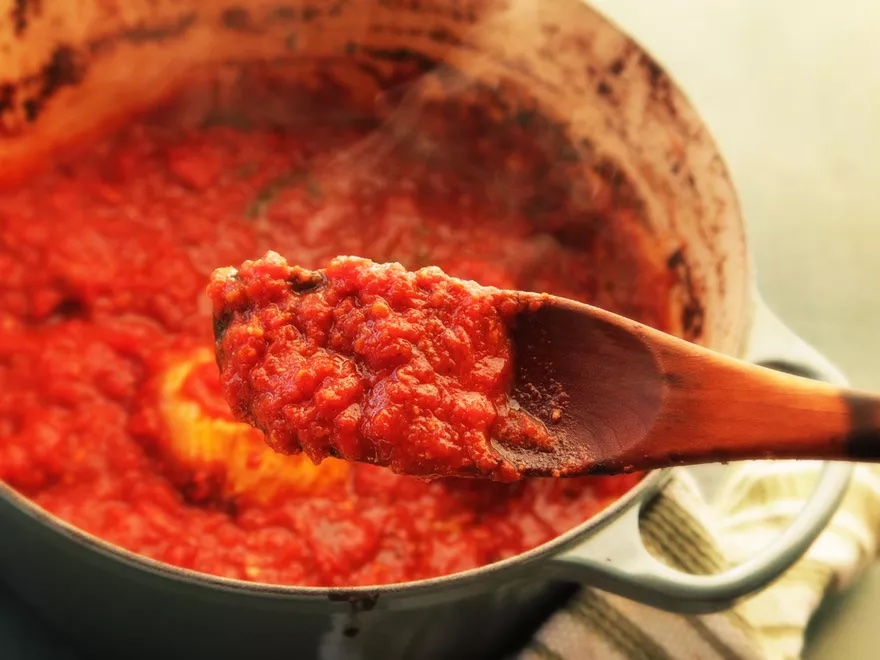

The Best Italian-American Tomato Sauce Recipe

Description
This is the recipe for Kenji Lopez's famous slow cooked Italian-American sauce.
A long stint in the oven allows the ingredients to caramelise just enough to deliver
the richest and most delicious flavour possible. See below for instructions on how to make this dish.
Ingredients
- (28-ounce) cans whole peeled tomatoes, preferably imported D.O.P. San Marzano tomatoes (see note)
- /4 cup extra-virgin olive oil, plus more for finishing
- 4 tablespoons butter
- 8 cloves garlic, minced (about 3 tablespoons)
- 1 teaspoon red pepper flakes
- 1 tablespoon dried oregano
- 1 medium carrot, cut into large chunks
- 1 medium onion, split in half
- 1 large stem fresh basil
- Kosher salt and freshly ground black pepper
- 1 tablespoon fish sauce, such as Red Boat (optional)
- 1/2 cup minced fresh parsley or basil leaves (or a mix of the two)
Instructions
- Adjust oven rack to lower position and preheat oven to 300°F (165°C). Place tomatoes in a large bowl. Using your hands, crush the tomatoes by squeezing them in your fingers until pieces no larger than 1/2-inch remain. Transfer 3 cups of crushed tomatoes to a sealed container and reserve in the refrigerator until step 4.
- Heat olive oil and butter over medium heat in a large Dutch oven until butter is melted. Add garlic and cook, stirring, until softened and fragrant but not browned, about 2 minutes. Add pepper flakes and oregano and cook, stirring, until fragrant, about 1 minute. Add tomatoes, carrot, onion, and basil, and stir to combine. Season lightly with salt and pepper. Bring to a simmer over high heat.
- Cover Dutch oven with lid slightly ajar and transfer to oven. Cook, stirring once every 1 to 2 hours, until reduced by about half and darkened to a deep red, 5 to 6 hours (reduce oven temperature if the sauce is bubbling too rapidly or the browned bits begin to turn too dark).
- Remove from oven. Using tongs, discard onion halves, carrots, and basil stems. Add reserved tomatoes to sauce and stir to combine. Add fish sauce, if using. Season generously with salt and pepper and stir in minced herbs along with additional olive oil as desired. Serve immediately, or allow to cool at room temperature, transfer to airtight containers, and refrigerate for up to 1 week. Sauce can also be frozen in sealed containers for up to 6 months. To reheat, warm very gently in a saucepan with 1/2 cup water, stirring until it all melts and heats through.